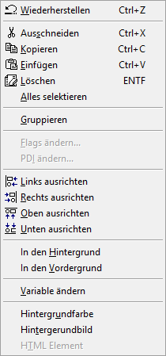
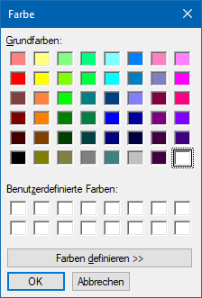
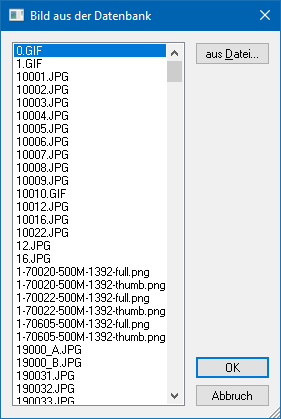

Wenn im WinLine Formular Editor ein Formular geöffnet wurde und aktiv ist, dann steht das Menü "Bearbeiten" zur Verfügung, wobei viele Funktionen auch über die Buttonleisten des WinLine Formular Editors bedient werden können. Weiterführende Informationen entnehmen Sie bitte dem Kapitel Buttons und Funktionen im Detail.

Ø Wiederherstellen
Alle nicht gespeicherten Formularänderungen können Änderung für Änderung rückgängig gemacht werden.
Ø Ausschneiden
Es werden alle markierten Elemente ausgeschnitten und in die Zwischenablage transferiert.
Ø Kopieren
Es werden alle markierten Elemente kopiert und in die Zwischenablage transferiert.
Ø Einfügen
Es werden alle Elemente aus der Zwischenablage eingefügt.
Ø Löschen
Alle markierten Elemente werden gelöscht.
Ø Alles Selektieren
Durch Anwahl dieses Menüpunktes werden alle sichtbaren Elemente des aktiven Formularteils (Kopf, Mitte oder Fuß) markiert. Diese Option eignet sich insbesondere dafür, allen Elementen eine neue Schriftart oder Schriftgröße zuzuordnen. Dieser Befehl ist nur über das Menü anwählbar.
Ø Gruppieren
Mit dieser Option können mehrere Elemente gruppiert bzw. zusammengefasst werden. Gruppierte Elemente werden im Formular gelb dargestellt. Damit können folgende Anforderungen gelöst werden:
ü Elemente können gemeinsam positioniert werden. Wenn eine Gruppe aktiviert wird und z.B. verschoben wird, dann werden immer alle Elemente dieser Gruppe verschoben - oder es kann für alle Elemente der Gruppe eine andere Schriftart vergeben werden.
ü Damit kann der Ausdruck von Leerzeilen gesteuert werden (Postanschrift). Abhängig davon, ob in der Variable ein Wert enthalten ist oder nicht, wird die entsprechende Zeile angedruckt. Bleibt eine Variable leer, wird die nachfolgende Variable angeschlossen (es gibt keine Leerzeile).
Ø Flags ändern…
Diese Funktion wird derzeit noch nicht unterstützt.
Ø PDI ändern…
Diese Funktion wird derzeit noch nicht unterstützt.
Ø Links ausrichten
Durch Anwahl dieser Option werden alle markierten Elemente mit linker Ausrichtung platziert (für diese Funktion müssen mindestens 2 Elemente markiert sein). Die Ausrichtung orientiert sich an dem markierten Element, welches am weitesten links platziert ist.
Ø Rechts ausrichten
Durch Anwahl dieser Option werden alle markierten Elemente mit rechter Ausrichtung platziert (für diese Funktion müssen mindestens 2 Elemente markiert sein). Die Ausrichtung orientiert sich an dem markierten Element, welches am weitesten rechts platziert ist.
Ø Oben ausrichten
Durch Anwahl dieser Option werden alle markierten Elemente mit Ausrichtung auf eine obere Ebene platziert (für diese Funktion müssen mindestens 2 Elemente markiert sein). Die Ausrichtung orientiert sich am obersten markierten Element.
Ø Unten ausrichten
Durch Anwahl dieser Option werden alle markierten Elemente mit Ausrichtung auf eine untere Ebene platziert (für diese Funktion müssen mindestens 2 Elemente markiert sein). Die Ausrichtung orientiert sich am untersten markierten Element.
Ø In den Hintergrund
Es wird das markierte Objekt (Variablen, Texte, Rahmen, Linien, etc.) in den Hintergrund (erste Stelle im Formular) geschoben. Wenn sich zwei Objekte übereinander befinden, so wird das markierte Objekt in den Hintergrund gestellt.
Hinweis
Mit den Optionen "In den Hintergrund" und "In den Vordergrund" wird auch die Reihenfolge der Abarbeitung der Elemente gesteuert, was z.B. im Zusammenhang mit SQL-Abfragen sehr wichtig ist.
Ø In den Vordergrund
Es wird das markierte Objekt (Variablen, Texte, Rahmen, Linien, etc.) in den Vordergrund (letzte Stelle im Formular) geschoben. Wenn sich zwei Objekte übereinander befinden, so wird das markierte Objekt in den Vordergrund gestellt.
Hinweis
Mit den Optionen "In den Hintergrund" und "In den Vordergrund" wird auch die Reihenfolge der Abarbeitung der Elemente gesteuert, was z.B. im Zusammenhang mit SQL-Abfragen sehr wichtig ist.
Ø Variable ändern
Bei Aufruf dieser Funktion gibt es 2 Möglichkeiten:
ü Ein Element (Eintrag) im Formular
ist ausgewählt
In diesem Fall kann die zuvor zugeordnete Variable des
Elements innerhalb der gleichen Tabelle bzw. View geändert werden.
ü Es ist kein Element (Eintrag) oder
mehrere Elemente ausgewählt:
In diesem Fall kann eine neue Variable eingefügt
werden, wobei alle Tabellen und Views zur Verfügung stehen, welche das Formular
bietet. Die Variable wird in dem Bereich (Kopf, Mitte oder Fuß) eingefügt,
welcher zuletzt bearbeitet wurde.
Ø Hintergrundfarbe
Diese Option kann nur dann ausgewählt werden, wenn ein Eintrag markiert ist. Dadurch kann einem Element eine Farbe zugeordnet werden, welche dann als Hintergrund zu diesem Element angedruckt wird. Hierfür wird bei Anwahl des Menüpunkts ein Fenster geöffnet, aus dem die gewünschte Farbe gewählt werden kann.

Ø Hintergrundbild
Diese Option kann nur dann ausgewählt werden, wenn ein Eintrag markiert ist. Dadurch kann einem Element eine Hintergrundgrafik zugeordnet werden. Hierfür wird bei Anwahl des Menüpunkts ein Fenster geöffnet, aus dem eine Grafik ausgewählt werden kann, wobei im ersten Schritt alle Grafiken aus der Datenbank angezeigt werden. Durch Anklicken des Buttons "aus Datei ..." kann eine Grafik gewählt werden, die sich nicht in der Datenbank (Systemtabellen) befindet.

Ø HTML Element
Diese Funktion wird derzeit noch nicht unterstützt.